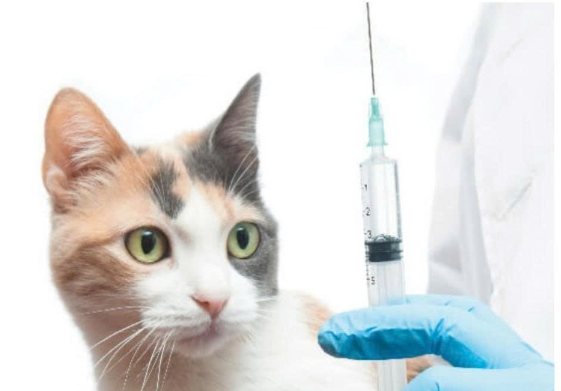

Trong giai đoạn mèo con vừa mới chào đời, chúng sẽ được hấp thu kháng thể tự nhiên từ mèo mẹ thông qua sữa đầu. Tuy nhiên, lượng kháng thể này sẽ giảm dần theo thời gian và có thể hạn chế khả năng tự kích hoạt hệ miễn dịch của bé. Vì thế, việc tuân thủ lịch tiêm ngừa vaccine chính là lá chắn bắt buộc để bảo vệ Boss khỏi những căn bệnh truyền nhiễm nguy hiểm không có thuốc chữa.
1. Vì sao và khi nào cần tiêm ngừa cho mèo?
Mèo con thường được các bác sĩ thú y chỉ định bắt đầu tiêm ngừa khi nằm trong giai đoạn từ 6 đến 8 tuần tuổi. Lịch tiêm sẽ được lặp lại đều đặn sau mỗi 3-4 tuần cho đến khi cơ thể mèo hoàn toàn tự sản sinh ra kháng thể mạnh mẽ để chống lại các nguồn bệnh từ môi trường ngoài.

2. Các mũi vaccine nhất định phải tiêm
Hiện nay có rất nhiều loại vaccine khác nhau, tuy nhiên các chuyên gia thú y đã khẳng định có những loại vaccine cốt lõi thuộc nhóm bắt buộc phải tiêm cho tất cả các dòng mèo để ngăn ngừa virus lây nhiễm nghiêm trọng:
- Vaccine phòng bệnh Giảm Bạch Cầu (FPV): Căn bệnh có tỷ lệ tử vong lên tới 90% ở mèo con.
- Vaccine phòng bệnh Viêm mũi – khí quản truyền nhiễm (FVR): Gây sốt và loét đường hô hấp.
- Vaccine phòng bệnh do Calicivirus (FCV): Gây loét lưỡi, loét miệng nhiễm trùng nặng.
- Vaccine phòng bệnh Dại (Rabies): Bệnh truyền nhiễm nguy hiểm lây sang cả người, bắt buộc tiêm theo quy định pháp luật.
Ngoài các mũi bắt buộc trên (thường được gộp chung trong 1 mũi tiêm 4 bệnh), bác sĩ có thể tư vấn tiêm thêm các mũi phụ tùy vào giống mèo hoặc lối sống của chúng như: phòng bệnh bạch cầu FeLV, vi khuẩn Bordetella, hay vi khuẩn Chlamydophila (virus gây viêm kết mạc ở mắt).
3. Lịch tiêm phòng chi tiết theo độ tuổi
Tùy thuộc vào số tuần tuổi và thể trạng của bé mèo, m hãy theo dõi và đưa bé đi tiêm chính xác theo lịch trình tham khảo chuẩn dưới đây:
| Độ tuổi | Mũi Tiêm & Tác Dụng Phòng Bệnh |
|---|---|
| 6 - 7 tuần tuổi | Mũi 1 (Vaccine tổng hợp): Phòng các virus gây bệnh ho, viêm mũi rhinotracheitis, virus Calici và chủng vi khuẩn Chlamydophila. |
| 10 tuần tuổi | Mũi 2 (Vaccine tổng hợp): Nhắc lại lần hai để củng cố hệ miễn dịch; phòng viêm thành phế nang. |
| Từ 12 tuần tuổi | Mũi vaccine phòng bệnh Dại: Tiêm theo chỉ dẫn của bác sĩ thú y địa phương (độ tuổi có thể xê dịch một chút tùy theo quy định y tế nơi m sinh sống). |
| 13 tuần tuổi | Mũi 3 (Vaccine tổng hợp): Hoàn thành phác đồ cơ bản. Có thể tiêm thêm mũi phòng bệnh bạch cầu đối với những bé mèo có nguy cơ lây nhiễm cao. |
| 16 và 19 tuần | Tiêm bổ sung các mũi vaccine phụ theo lối sống hoặc nhắc lại mũi phòng bệnh bạch cầu nếu cần thiết. |
| Mèo trưởng thành | Tiêm nhắc lại định kỳ hàng năm: Gồm 1 mũi vaccine tổng hợp và 1 mũi vaccine phòng bệnh Dại để duy trì kháng thể suốt đời. |
4. Bảng giá tham khảo các loại vaccine thông dụng
Chi phí tiêm chủng sẽ có sự chênh lệch nhỏ tùy theo từng khu vực, phòng khám hoặc trung tâm thú y lớn. M có thể tham khảo mức giá trung bình hiện nay:
Vaccine 4 Bệnh (Tổng hợp)
PureVax / Leucorifelin (Mỹ, Pháp)
~ 200.000 VND / mũiVaccine Phòng Dại
Rabisin (Vô cùng thông dụng, an toàn)
~ 100.000 VND / mũiLời khuyên vàng từ Sen lâu năm:
Hiện nay trên thị trường xuất hiện không ít các loại vaccine giả mạo, kém chất lượng trôi nổi nhằm mục đích kiếm lời. Để bảo vệ tính mạng cho Boss, m tuyệt đối không tự mua vaccine về tiêm tại nhà mà hãy đưa mèo đến trực tiếp các bệnh viện thú y uy tín, có nguồn gốc xuất xứ thuốc rõ ràng và có sự theo dõi sát sao từ bác sĩ nhé!